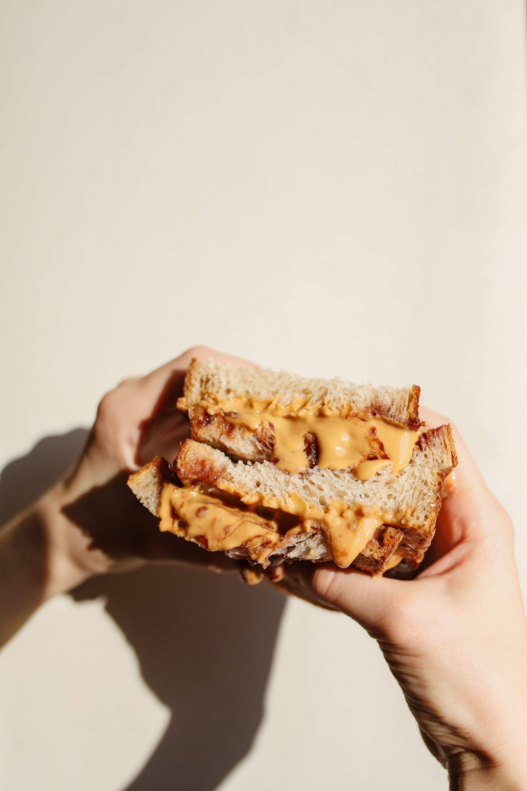

Image Credit: Polina Tankilevitch
Behold: the humble PB&J. This classic sandwich combines two of the greatest inventions of all of mankind's history: the rich, delectable treasure that is peanut butter, and sweet, awe-inspiring grape jelly. Loved by kids and adults alike across the globe, the PB&J has stood the test of time to continue to be one of the greatest foods the Earth has ever been blessed with. Pair with your favorite chips and a glass of cold milk for the best experience.